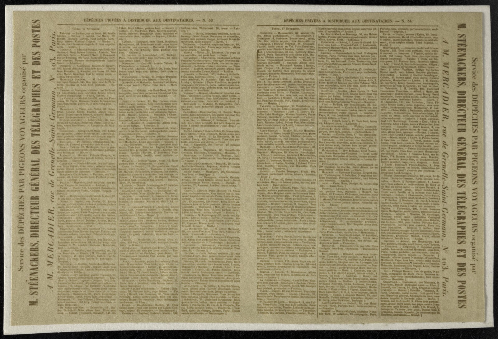
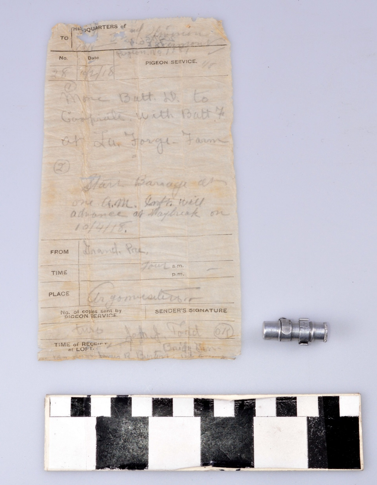

Why a bird
In the winter of 1870 Paris was surrounded, and its post went out by pigeon.
Thousands of dispatches were photographed onto a sheet of film small enough to roll into a quill and tie to a tail feather. One bird could carry a whole newspaper of private letters.
What it could not carry was secrecy. A bird shot down was a mailbag opened, and nobody could tell a forged dispatch from a real one.
CipherBird is the missing half: envelopes only the recipient can open, signatures nobody can forge, and keys built to outlast a quantum computer. See a sealed message.

Type a message and watch it travel
- EngineStarting

Things a browser cannot do alone
One engine, every language
First, hash something in C.
cipherbird_init();
CryptoBufferResult r = cipherbird_blake3(
(const uint8_t*)"meet at dawn", 12, 32);
/* r.buf.data holds 32 bytes; free with cipherbird_buffer_free */Then seal it in Dart.
final key = SymmetricKey.generate();
final box = key.encryptText('meet at dawn', aad: 'thread 7');Open it in Node, and watch a forgery fail.
const cipherbird = require('cipherbird');
const key = cipherbird.SymmetricKey.fromHex(keyHex);
key.decryptText(box, { aad: 'thread 7' });Every function, by area
Open the explorerQuestions